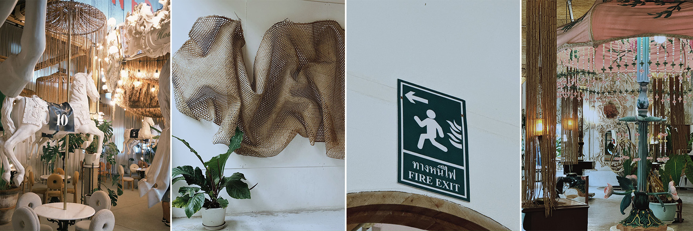
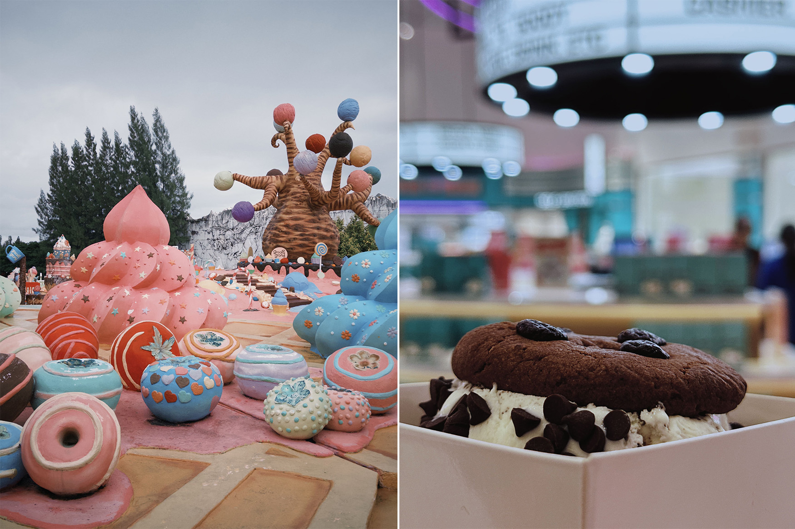
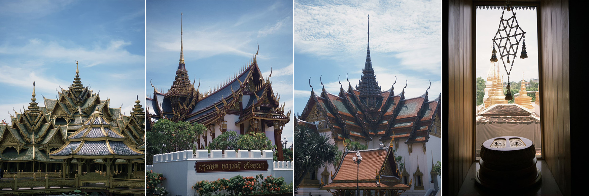

出發前，我把行程每一站都做足了功課。只是沒想到這趟旅行真正的主角不是歷史古蹟或當地美食，而是泰國的雨，以及在氾濫中依然微笑的泰國人。
Day 1：抵達曼谷，烏雲壓境
一下飛機，迎面而來的是又悶又濕的空氣，天空灰得像被蓋上一層厚毯子。辦理好入住手續後，手機突然跳出看不懂的泰文警示，此時新聞也報導多處地區積水、部分道路封閉。
或許是注意到我們慌張的神情，櫃檯笑著指向傘桶的位置，說了一句「Mai pen rai」（沒關係）後再夾雜著英文告訴我們，雨季年年都來，路淹了就換條路走，不必緊張。
晚餐時，我們找了間網路評價不錯的小餐廳，看著店裡有人忙著將積水掃出店外，有人迅速將剛做好的菜餚送到指定位子，但大家神色如常，似乎沒有因淹水而感到困擾。窗外雨幕茫茫，店裡卻熱鬧得很。看來這趟旅行恐怕要照著這裡的節奏走了。
Day 2：班奈迪克之屋，洪水中的溫暖早午餐
隔天雨勢依舊，有些路段的積水已經漫過人行道。出門時，我看見路邊的攤販把褲管捲到膝蓋，涉水推著小車照常出攤。幾個孩子在積水的巷口追逐嬉鬧，把這場大水當成免費的遊樂場。過程中不知誰的拖鞋漂走了，誰又被濺了一身水，笑聲此起彼落。
班奈迪克之屋成了我們的避難所。戶外是傾盆大雨，店裡是暖黃的燈光和剛煮好的咖啡，桌上那份熱騰騰的早午餐，讓人瞬間忘記外頭的混亂。在吃完後慢慢逛裡面奇異的建築，再次體會到與外面景色巨大反差。
 |
Day 3：轉往芭達雅，糖果屋的甜蜜補償
去往糖果屋的路上能看到路旁殘留的水痕，車子偶爾得放慢速度涉水而過。初次見到這般景象，我一路上仍有些不安，司機卻一派輕鬆，彷彿行駛在平常的乾燥路面上，時不時回頭安慰我們不用擔心。沿途看見的人們也一樣，有人在路邊撐傘等車，有人坐在店門口看雨，神情悠閒得像在欣賞風景。
糖果屋整個區域被繽紛的糖果色包圍，每個角落都像童話場景或是曾在夢裡見過。手也彷彿像上了發條般，不受控制的只想記錄當下看到的
 |
Day 4：暹羅古城，積水倒映的金色屋頂
回到曼谷周邊後，雨勢稍微緩了下來，我們決定賭一把，前往暹羅古城。這裡像是把整個泰國縮小後放進來的露天博物館，宮殿、寺廟、水上市場一路排開。
我們租了電動車慢慢逛，走到哪裡都能看到充滿泰國風格的建築，不論是玉米造型的屋頂或是莊嚴的佛寺，能夠一次看到泰國各地特色建築，美得有點不真實。
園區的工作人員在路上疏導遊客，還主動提醒我們哪一段路還在淹水，雖然偶爾飄來細雨，但擋不住天空想維持青藍的決心。遊客少了很多，反而能安靜地拍照、慢慢欣賞建築的每一處細節。當時我心想，也許這種天氣，才是看古城最好的時候。
 |
Day 5：Bubble in the Forest Cafe，在森林裡放慢腳步
最後一天，天空總算不再飄雨，露出整片純粹的藍。我們來到 Bubble in the Forest Cafe，在綠意與泡泡裝飾交織的空間裡，點了些餐點，什麼也不想，就這麼躺在懶骨頭上發呆。陽光從屋頂間的縫隙灑下來，空氣裡帶著點久違的清新。
回頭想想這幾天，從擔心行程泡湯，到一次次臨機應變，心情竟然慢慢從焦慮變成了享受。面對突如其來的洪水，慌張解決不了問題，放鬆想辦法才能讓心情不被打亂。
尾聲
這趟泰國之旅，和我原本的計畫差了十萬八千里。行程被洪水打亂，順序重排，有些地方甚至差點去不成。但也因為這樣，我學會了放下「一定要照計畫走」的執念，發現旅行最迷人的地方，往往就藏在計畫之外：飯店櫃檯那句「Mai pen rai」、班奈迪克之家溫暖的燈光、古城工作人員的笑容、咖啡廳裡的寧靜。
泰國的雨季讓我們措手不及，卻也讓這趟旅程多了一份獨一無二的故事。下次再來，我會記得帶把傘，更會記得帶著那份從泰國人身上學到的樂觀與從容，或是最簡單的，挑選不是雨季的時候去。